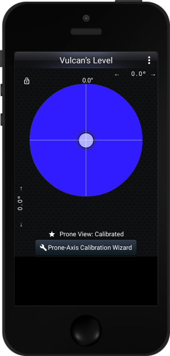

|
|
| In the App Store | In the Play Store |
|
Unique Calibration ProcessMost mobile-device levels require a level surface to calibrate. Level of Vulcan may be calibrated on any firm surface. The two-stage calibration process measures the tilt of the surface two ways, two errors to cancel each other out, giving you a correct calibration anywhere. |
|  | Optional axis lines show when your central bubble is on one of the two axes. When both lines show, you're level, within your selected accuracy. |
|
Turn your mobile device on its side and you'll see a wide view or a high view. |
|
Pick whatever fluid color suits your fancy. |
|
You can set the degree of accuracy that determines how close to true level you want to detect. An inexpensive carpenter's level might have an accuracy of 2:1000, or two parts per 1000. A more expensive level might have an accuracy of 1:1000 or even 1:2000. Vulcan’s level lets you choose the accuracy needed to indicate when your surface is level. Of course, this setting doesn't affect the accuracy of the internal sensor. And some smart phones will have better sensors than others. Vulcan's Level, and any other smart-phone level, can't make any promises about the accuracy of your smart-phone's sensor. |
|
You may display the measured angles in degrees, in percent (rise/run), or in American roofer's units, which show inches of rise per foot of run. |